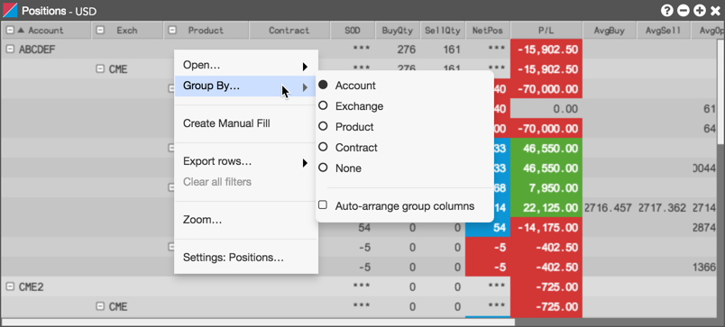
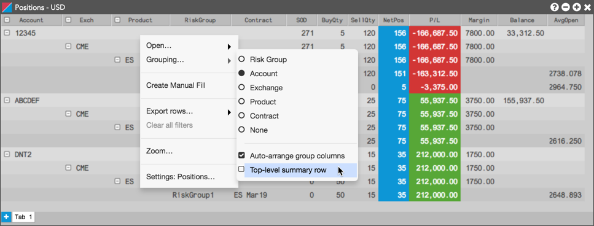
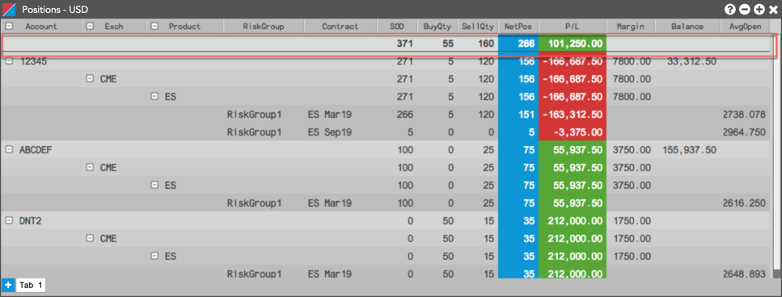
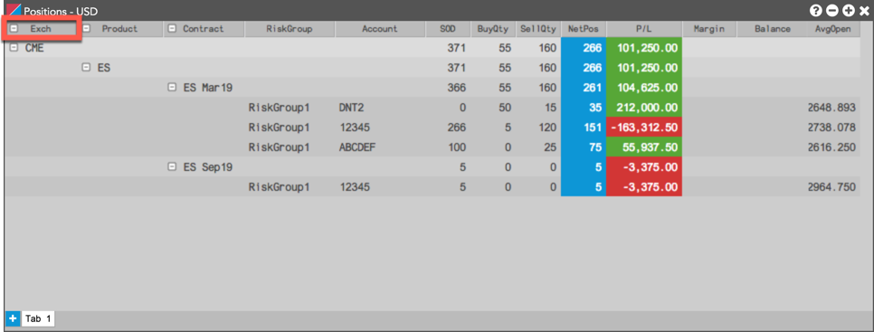
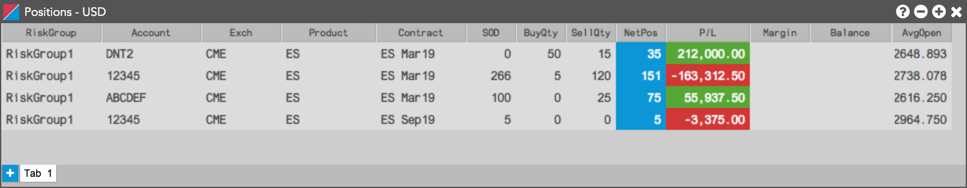
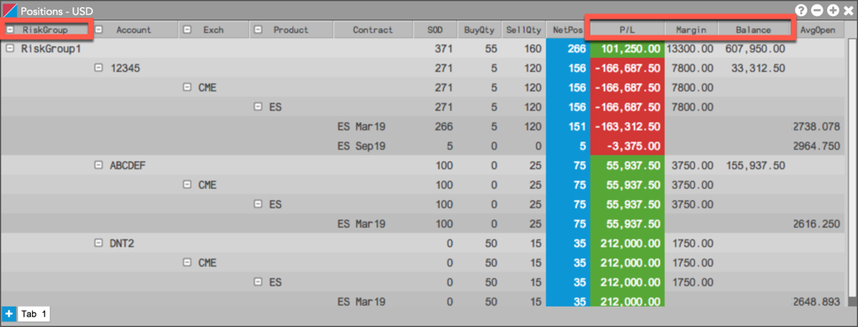

You can configure the Positions widget to display your open positions and P/L by risk group, account, exchange, product, or contract by using the Grouping option in the context menu or the local Settings: Positions menu.
To group positions, right-click in the widget and select Grouping.... For example, we can group our positions by account.

When grouping positions, you can also select Top-level summary row to display a summary at the top of the widget.

The summary row shows your overall position based on your grouping.
Note: When grouping by account, parent account positions also include their child account positions, so only the parent account net position is added to the total in the summary row.
To change the grouping, click an option in the Grouping... menu (e.g., Exchange).

By clicking Grouping... | None, you can disable grouping to display the positions in a flattened form as shown.

Risk groups allow your administrator to set risk limits for managed users or accounts from different companies in TT. When displaying positions by risk group, the P/L, Margin, and credit balance columns (e.g., Balance) are calculated independently of the accounts assigned to the group.
